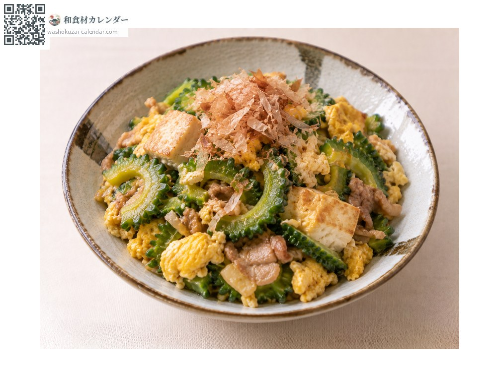
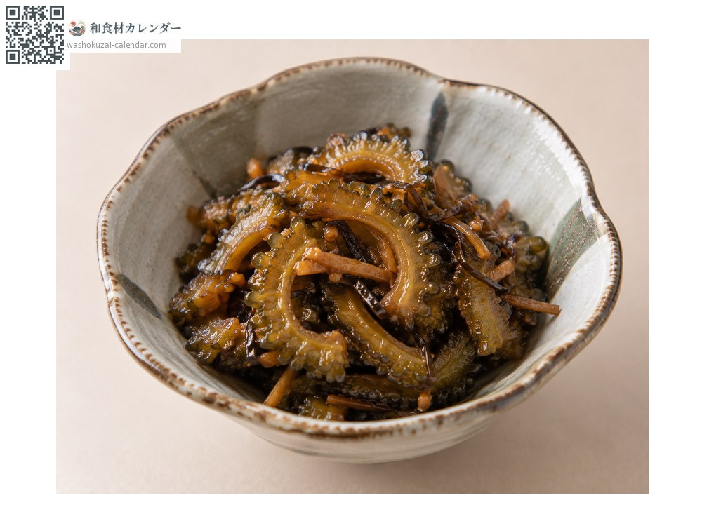
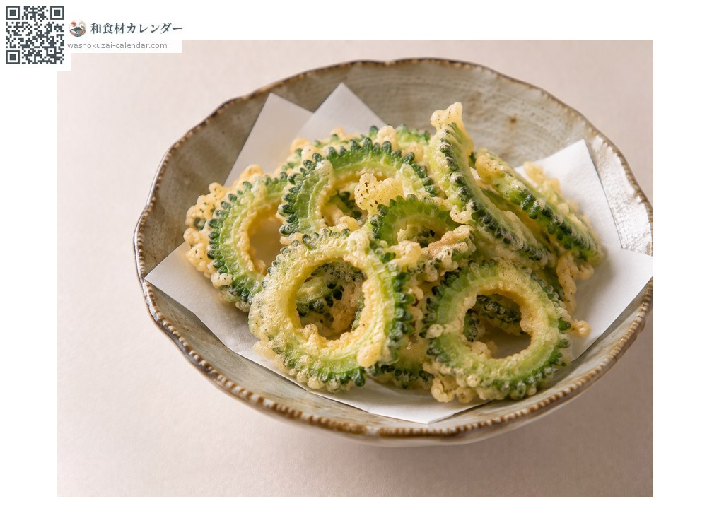
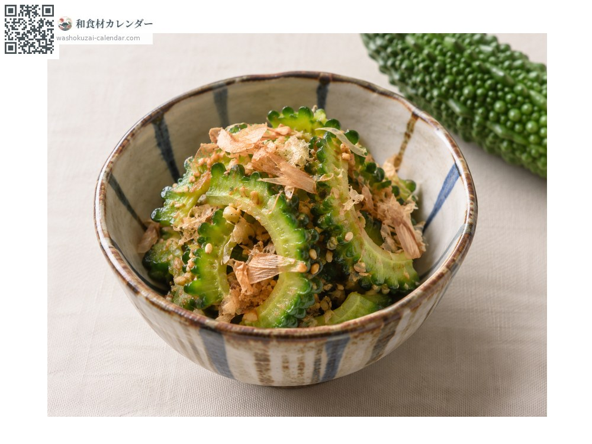

野菜
ゴーヤ
ごーや
旬は6月・7月・8月

旬の時期
1月
2月
3月
4月
5月
6月
7月
8月
9月
10月
11月
12月
旬出回り
調理法

ゴーヤチャンプルー
豆腐と卵で炒める。沖縄の定番。

佃煮
甘辛く煮て。

天ぷら
苦みが和らぐ。

和え物
薄切りを塩もみして。
選び方
イボが密で均一なもの。色が濃く、硬く締まっているもの。
保存方法
種とわたを取ってラップで包み冷蔵。切ると傷みが早い。
主な産地
豆知識
苦みは種とわたに多い。塩もみや下茹でで和らげられる。熟すと黄色くなり苦みが抜ける。